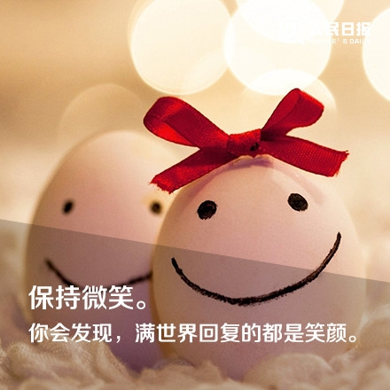

 STJ型人格，善于倾听，做事专注，可靠，自律，有较强的学习力和逻辑思维能力，善于总结和反思，能举一反三。 喜欢看书（经管，传记，励志，小说等），热爱运动（快走，慢跑，爬山，柔韧性锻炼等），喜欢并坚持写日记。 期望的工作状态：热爱，专业，高效。 3年工作经验，虽然没有从事编程开发工作，但对自己有了更清晰的认识和更长远坚定的职业规划，相信自己在技术这条路上，一定可以走好走远，也希望遇到彼此适合和彼此欣赏的你，一起为梦想奋斗。